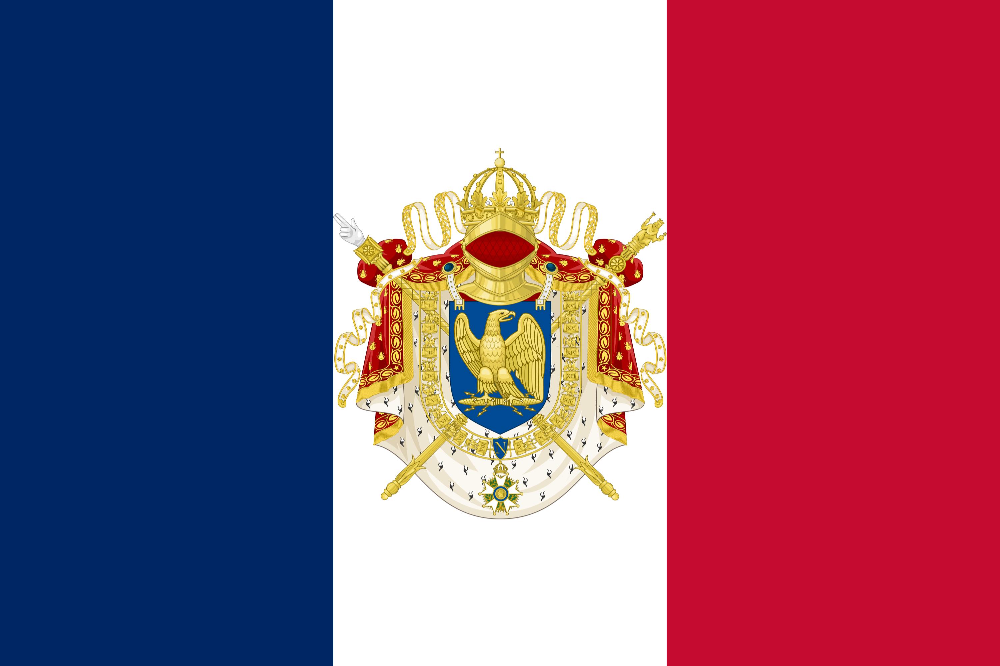

Birth of Napoleon (1769)
Napoleon Bonaparte was born on 15 August 1769 in Ajaccio on the island of Corsica. His family belonged to the minor Corsican nobility but had limited wealth. Shortly before his birth, France had taken control of Corsica, which meant Napoleon grew up between two cultural worlds: Corsican identity and French political authority. This early background shaped his ambition and determination to rise through the institutions of his adopted country. The house where he was born, known as Maison Bonaparte, still stands in Ajaccio and is now a national museum.

Military Education (1779–1785)
Napoleon left Corsica at age ten to attend military school in mainland France. He first studied at the College of Autun and then at the military academy at Brienne-le-Château, where he spent five years mastering mathematics, history, and geography. His teachers noted his discipline and intensity. In 1784 he was admitted to the prestigious École Militaire in Paris, where he specialized in artillery—a branch requiring advanced mathematical thinking that would become one of Napoleon's greatest strategic advantages on the battlefield. He graduated in 1785 and was commissioned as a second lieutenant of artillery.

Siege of Toulon (1793)
Napoleon first rose to national attention during the Siege of Toulon in 1793. British and royalist forces had seized control of this important French Mediterranean port. The young artillery captain designed a bold strategy: rather than attacking the city directly, he positioned his guns on the heights surrounding the harbor, making the British naval position untenable. The plan succeeded brilliantly, forcing the British fleet to withdraw. At only twenty-four years old, Napoleon was promoted to brigadier general, launching the military career that would reshape Europe.

Coup of 18 Brumaire (1799)
By the late 1790s, France's revolutionary government—the Directory—had become weak and deeply unpopular. On 9 November 1799 (18 Brumaire in the French Republican Calendar), Napoleon participated in a carefully planned political coup that overthrew the Directory. A new government called the Consulate was established, with Napoleon as First Consul. Though nominally a republic, the Consulate concentrated real power in Napoleon's hands. This marked his decisive transition from celebrated military commander to political leader of France, setting the stage for the Empire that would follow.

Crossing the Alps (1800)
In May 1800, Napoleon led the French army on a daring crossing of the Great St. Bernard Pass through the Alps to surprise Austrian forces occupying northern Italy. The logistical achievement of moving tens of thousands of soldiers with artillery through narrow mountain passes in spring was remarkable. The campaign culminated in the Battle of Marengo on 14 June 1800, where a near-defeat was turned into a decisive French victory. This crossing was immortalized in Jacques-Louis David's famous painting showing Napoleon astride a rearing horse against the Alpine backdrop.

Coronation as Emperor (1804)
On 2 December 1804, Napoleon crowned himself Emperor of the French at Notre-Dame Cathedral in Paris in the presence of Pope Pius VII. In a dramatic departure from tradition, Napoleon took the crown from the Pope's hands and placed it on his own head, symbolizing that his authority derived from his own achievements rather than from divine right or papal blessing. He then crowned his wife Joséphine as Empress. The ceremony was captured in a monumental painting by Jacques-Louis David, one of the most famous works in the history of art, now displayed in the Louvre.

Battle of Austerlitz (1805)
The Battle of Austerlitz, fought on 2 December 1805, is widely regarded as Napoleon's greatest military victory. Facing the combined armies of Tsar Alexander I of Russia and Emperor Francis II of Austria near the town of Austerlitz in Moravia, Napoleon deliberately weakened his right flank to lure the allies into a trap. When the enemy committed their forces against his apparent weakness, he struck with devastating force through their center. The allied army was shattered, losing nearly a third of its strength. The victory secured French dominance across much of continental Europe.

The Napoleonic Code (1804)
The Napoleonic Code, officially the Code civil des Français, was promulgated in 1804 and remains one of Napoleon's most enduring legacies. It replaced the patchwork of feudal, royal, and revolutionary laws with a unified legal system guaranteeing equality before the law, protection of property rights, and secular civil authority. Napoleon personally presided over many of the drafting sessions. The Code's influence spread far beyond France—it became the foundation for legal systems across Europe, Latin America, the Middle East, and beyond, and continues to shape civil law in dozens of countries today.

Invasion of Russia (1812)
In June 1812, Napoleon invaded Russia with the Grande Armée, a multinational force of over 600,000 soldiers—the largest army Europe had ever seen. Although his forces captured Moscow in September, they found the city largely abandoned and soon engulfed in flames set by the retreating Russians. With no peace offer forthcoming from Tsar Alexander I and winter approaching, Napoleon ordered a retreat that became one of history's greatest military disasters. Harassed by Russian forces, starving, and frozen, fewer than 100,000 soldiers survived the return march, marking the beginning of Napoleon's downfall.

Exile on Saint Helena (1815–1821)
After his final defeat at the Battle of Waterloo on 18 June 1815, Napoleon surrendered to the British and was exiled to the remote volcanic island of Saint Helena in the South Atlantic Ocean, some 1,900 kilometers from the nearest land. There he lived under British supervision at Longwood House, a damp and deteriorating residence. Napoleon spent his final years dictating memoirs, gardening, and reflecting on his legacy. He died on 5 May 1821 at the age of fifty-one, likely of stomach cancer. His remains were returned to France in 1840 and now rest beneath the dome of Les Invalides in Paris.